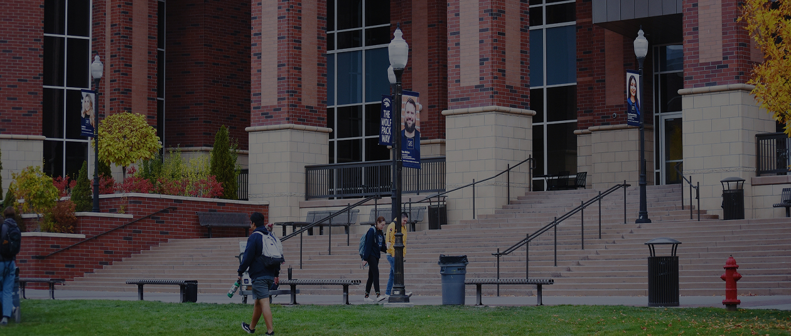
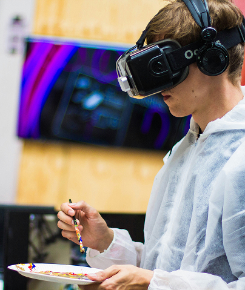
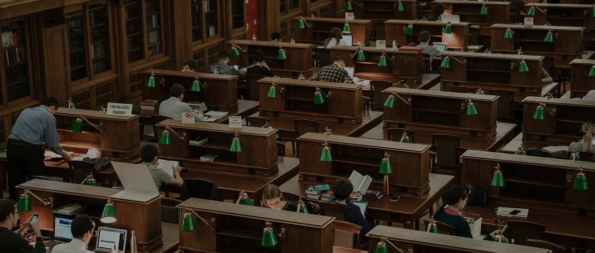
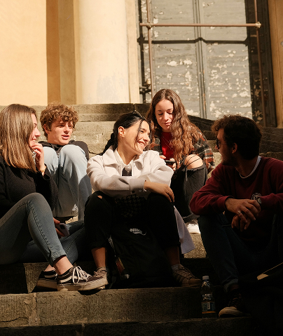
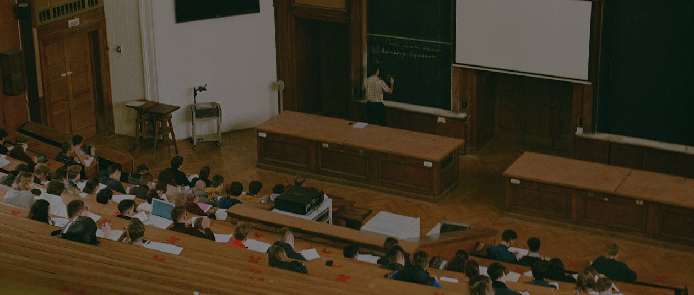
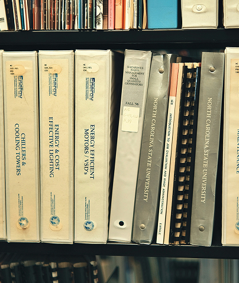
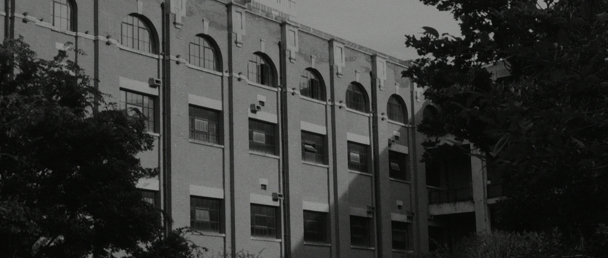
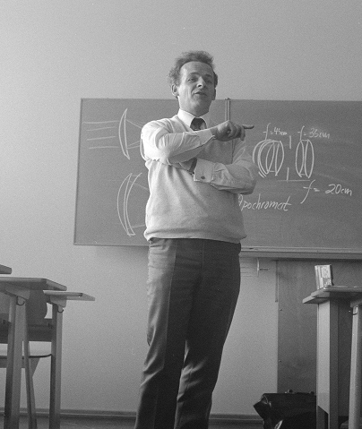

SEOKYEONG UNIV.
학교소개
연혁
Since 1947
서경대학교는 반세기 교육의 토대 위에 지혜와
서경대학교는 반세기 교육의 토대 위에 지혜와
서경대학교는 반세기 교육의 토대 위에 지혜와
서경대학교는 반세기 교육의 토대 위에 지혜와
인의, 용기를 갖춘 미래 인재를 양성해 왔습니다.
인의, 용기를 갖춘 미래 인재를 양성해 왔습니다.

2025-2010
세상의 변화를 이끄는 교육
서경의 혁신
2025 -
2010

2025 - 2016
-
2020. 05.
산학융합인재개발원 설립 서경혁신원 개편(CREOS인증센터, 교수학습지원센터, 진로·심리상담센터, 취업지원센터, 창업지원센터, 인성교육센터) 예술종합평생교육원을 예술교육원으로 명칭 변경
-
2020. 03.
학부 : 6개 단과대학, 5개 학부, 19개 학과 대학원 : 일반대학원 - 석사과정 12개 학과, 박사과정 5개 학과 경영문화대학원 - 석사과정 3개 학과 미용예술대학원 - 석사과정 1개 학과 실용음악대학원 - 석사과정 1개 학과
-
2020. 02.
제12대 최영철 총장 취임
-
2019. 12.
서경SKON어린이집 개원
-
2019. 11.
대학원 석사과정 신설 - 실용음악학과 실용음악대학원 석사과정 신설 - 실용음악학과 서경공연예술창작연구소, 한불문화예술연구소 설립
-
2019. 08.
융합대학 설립
-
2019. 03.
홍보실, 서경인권센터, 대학혁신추진사업단 설립(직속기관) 대학혁신발전연구원 신설
-
2019. 02.
서경대학교 공연예술센터 개관(혜화동)
-
2018. 08.
2주기 대학기본역량진단평가-자율개선대학 선정
-
2018. 03.
학부 : 6개 단과대학, 5개 학부, 19개 학과 대학원 : 일반대학원 - 석사과정 11개 학과, 박사과정 5개 학과 경영문화대학원 - 석사과정 3개 학과 미용예술대학원 - 석사과정 1개 학과 한일문화예술연구소 설립(구 한일문화연구소)
-
2017. 09.
학부 : 6개 단과대학, 7개 학부, 17개 학과 대학원 : 일반대학원 - 석사과정 11개 학과, 박사과정 5개 학과 경영문화대학원 - 석사과정 3개 학과 미용예술대학원 - 석사과정 1개 학과
-
2017. 10.
개교 70주년
-
2017. 05.
서경혁신원 현장실습지원센터 설립
-
2017. 03.
미용예술대학 신설, 실용음악영재교육원 설립
-
2017. 02.
제11대 최영철 총장 취임 서경혁신원 핵심역량교육센터 폐지 및 CREOS인증센터 설립
-
2017. 01.
교육부 교원양성기관 평가 최우수 A등급 선정
-
2016. 11.
외국인학생지원센터 설립(직속기관)
-
2016. 09.
서경혁신원 대학혁신및평가센터, 재정지원사업지원센터 폐지 철학사상연구소를 문화예술콘텐츠연구소로 변경
-
2016. 06.
서경미래연구원(직속기관) 설립
-
2016. 05.
다문화연구센터(연구소) 설립
-
2016. 04.
성북구청과 지역문화컨텐츠 개발을 위한 업무협약 체결 인성교양대학 설치(산하 교양교육연구소 설치) 언어문화교육원 설립
-
2016. 03.
VR미래융합센터(연구소) 설립
-
2016. 02.
팔레스타인 Al-Quds University와 자매결연 체결 서경혁신원 설립(대학혁신및평가센터, 핵심역량교육센터, 재정지원사업지원센터, 교수학습지원센터, 인성교육센터, 진로·심리상담센터, 취업지원센터, 창업지원센터, 사회봉사지원센터, 종합서비스센터)
2015 - 2014
-
2015. 12.
중국 Harbin Cambridge University(하얼빈 검교대학)와 자매결연 체결
-
2015. 10.
한국학교컨설팅연구소 설립
-
2015. 09.
교육부 대학기관평가인증(1주기)대학 선정
-
2015. 07.
데이터컴퓨팅센터 설립
-
2015. 06.
프랑스 University Jean Monnet와 자매결연 체결
-
2014. 09.
생활관 개관
-
2014. 04.
디자인연구소 설립
-
2014. 02.
제10대 최영철 총장 취임
2013 - 2012
-
2013. 06.
육군본부와 학군협약 체결(군사학과) 평생교육원을 예술종합평생교육원으로 명칭 변경
-
2012. 11.
서경트레이닝센터 설립
-
2012. 10.
대만 Toko University와 자매결연 체결 제12회 한국대학신문대상 ‘교육특성화우수대학’상 수상(한국대학신문사 주관)
-
2012. 06.
학부 4개 단과대학, 7개 학부, 15개 학과 대학원 일반대학원 - 석사과정 10개 학과, 박사과정 - 5개 학과 경영대학원 - 석사과정 2개 학과 미용예술대학원 - 석사과정 1개 학과
-
2012. 04.
대만 Hsuan Chuang University(현장대학)와 자매결연 원격교육원, 학교기업(SKU 뷰티컴퍼니) 설립
-
2012. 03.
페루 Universidad San Ignacio de Loyola(USIL)와 공동학위 협약 체결(미용예술,컴퓨터공학, 전자공학분야)
-
2012. 02.
해병대사령부와 학군교류협정 체결 대만 Chinese Culture University 공동학위 협약 체결(미용예술분야)
2011 - 2010
-
2011. 11.
페루 Universidad San Ignacio de Loyola(USIL)와 자매결연
-
2011. 09.
대만 MingDao University(명도대학)와 자매결연
-
2011. 06.
무대의상연구소 설립 미국 University of Texas at El Paso(UTEP)와 공동학위 협약 체결(나노융합분야)
-
2011. 03.
계약학과 신설·운영(학부 - 미용예술학과, 대학원 - 경영학과, 미용예술학과) 상승관 폐지
-
2011. 02.
제9대 최영철 총장 취임
-
2010. 06.
학과 신설 - 글로벌경영학과

2009-2000
세계로 향한 눈,
교육의 틀을 넓히다
2009 -
2000

2009 - 2008
-
2009. 03.
신축 학술정보관 개관
-
2008. 10.
새로운 UI(University Identity)선포 공학교육연구센터 설립
-
2008. 06.
학교기업 설립
-
2008. 03.
미국대학 공동학위 프로그램 시행(Southern New Hampshire University)
-
2008. 02.
제8대 최영철 총장 취임
2007 - 2006
-
2007. 11.
산업대학원을 경영대학원으로 명칭 변경
-
2007. 03.
학생군사교육단(ROTC)창설
-
2006. 07.
경영대학원, 물류대학원, 사회과학대학원을 산업대학원으로 통합
2005 - 2000
-
2005. 09.
학군제휴 협약 체결(육군본부)
-
2005. 03.
일본 히로시마시립대학과 자매결연 종합인력개발센터 설립 사회교육원을 평생교육원으로 명칭 변경
-
2005. 02.
군사학연구소 설립
-
2004. 07.
산학협력단 설립 학과 신설 - 패션디자인학과 전공 신설 - 디자인학부(비주얼컨텐츠디자인전공, 문화산업공예디자인전공) 전공 폐지 - 디자인학부(산업디자인전공, 패션디자인전공) 대학원 박사과정 신설 - 미용예술학과 대학원 석사과정 신설 - 도시공학과, 연극영화과 교육대학원 석사과정 신설 - 상담교육과정 대만 중국문화대학과 자매결연
-
2004. 06.
러시아 노보시비르스크국립공과대학교와 자매결연
-
2004. 02.
제7대 한철수 총장 취임
-
2003. 09.
모집 전공 변경 - 이론연출전공 → 영화전공 대학원 석사과정 신설 - 미용예술학과, 음악학과 미용예술대학원 석사과정 신설 - 미용학과 투자정보대학원 석사과정 폐지 - 금융정보학과, 벤처경영학과 품질아카데미 설립
-
2003. 04.
중국 동북재경대학과 자매결연
-
2003. 03.
상승관 개관
-
2002. 11.
학과 신설 - 소프트웨어학과(40명), 미용예술학과(30명) 대학원 석사과정 신설 - 국제통상학과, 전자공학과 경영행정대학원 석사과정 신설 - 미용경영학과 교육대학원 학과명칭변경 - 컴퓨터공학교육 → 전산교육 편 제 - 4개 대학, 5개 학부, 주간 24개학과, 야간 3개학과
-
2002. 03.
원격강좌 운영, 사회봉사단, 교수학습개발센터 설립
-
2002. 02.
제6대 총장에 민병천 박사 취임
-
2001. 09.
철학사상연구소 설립
-
2001. 08.
시간제등록제, 계절학기 시행 학부 신설 - 유럽어학부(노어전공, 불어전공)(40명) 학과 신설 - 전자상거래학과(40명) 주간전환학과 - 불어과, 경제학과, 정보관리학과 학과명칭변경 - 노어학과 → 노어전공, 불어과 → 불어전공, 화학과 → 응용화학과, 정보관리학과 → 인터넷정보학과 전자통신컴퓨터공학부 → 전자공학과, 정보통신공학과, 컴퓨터공학과 대학원 박사과정 신설 - 컴퓨터공학과, 산업경영시스템공학과, 생물공학과 대학원 석사과정 신설 - 일어학과, 산업디자인학과 교육대학원 석사과정 신설 - 컴퓨터공학교육전공, 영어교육전공 투자정보대학원 설립(석사과정 신설 - 부동산정보학과, 벤처경영학과, 금융정보학과) 사회과학대학원 설립(석사과정 신설 - 상담심리학과, 청소년지도학과, 사회복지학과) 편 제 - 4개 대학, 5개 학부, 주간 22개학과, 야간 2개학과
-
2000. 08.
주간전환학과-노어학과, 중어학과, 아동학과, 회계학과 학과명칭변경-전산정보관리학과 → 정보관리학과 편 제 - 4개 대학, 5개 학부, 주간 17개학과, 야간 6개학과
-
2000. 07.
대학원 박사과정 신설 - 컴퓨터과학과
-
2000. 02.
제5대 총장에 민병천 박사 취임

1999-1990
학문과 실용의 균형을 찾다
서경의 성장기
1999 -
1990

1999 - 1998
-
1999. 11.
학부제 실시 수리정보통계학부 : 응용수학전공, 정보통계전공 디자인학부 : 산업디자인전공, 패션디자인전공 음악학부 : 성악전공, 피아노전공, 관현악전공 연극영화학부 : 이론연출전공, 연기전공 주간전환학과 - 법학과, 수리정보통계학부, 산업경영시스템공학과 학과 신설 - 무용예술학과(30명) 대학원 박사과정 신설 - 경영학과 대학원 석사과정 신설 - 국어국문학과, 영어학과, 중어학과, 법학과, 행정학과, 화학과, 생물공학과, 산업경영시스템공학과 교육대학원 설립(석사과정 신설 - 교육행정) 편 제 - 4개 대학, 5개 학부, 주간 13개학과, 야간 10개학과
-
1998. 12.
미국 텍사스대학교(팬아메리카캠퍼스)와 자매결연
-
1998. 11.
야간학과 주간으로 50% 변경(주간 17개학과, 야간 14개학과) 주간전환학과 - 국어국문학과, 영어학과, 일어학과, 경영학과, 국제통상학과, 화학과, 컴퓨터과학과, 도시공학과, 산업디자인학과 학과 명칭 변경 - 무역학과 → 국제통상학과 학과 신설 - 아동학과(야), 전자공학과, 정보통신공학과, 토목공학과, 패션디자인학과, 연극영화과, 음악학과 대학원 석사과정 신설 - 전산정보관리학과, 컴퓨터공학과
-
1998. 07.
러시아 노보시비르스크국립대학교와 자매결연
-
1998. 03.
러시아 콤스몰스크대학교와 자매결연
-
1998. 02.
제4대 총장에 민병천 박사 취임
1997 - 1996
-
1997. 12.
미국 머레이주립대학교와 자매결연 일본 벳부대학교와 자매결연 미국 휴스턴주립대학교와 자매결연
-
1997. 11.
프랑스 샹베리대학교와 자매결연 학과 신설 - 도시공학과, 컴퓨터공학과(야) 물류대학원 신설(석사과정 신설 - 물류학과, 유통학과)
-
1997. 09.
학생생활연구소 설립
-
1997. 06.
중국 북경어언문화대학과의 자매결연
-
1997. 05.
중국 길림성 사회과학원과의 자매결연
-
1996. 12.
일본 오이타 국립대학교와 자매결연
-
1996. 11.
대학원 석사과정 신설 - 컴퓨터과학과
-
1996. 10.
학과 명칭 변경 - 정보처리학과 → 컴퓨터과학과, 전산통계학과 → 전산정보관리학과 학과 인원 증원 - 컴퓨터과학과(20명), 산업디자인학과(20명)
-
1996. 07.
산업기술연구소 설립
-
1996. 06.
중국 연변대학교와 자매결연
-
1996. 05.
러시아 하바로프스크공과대학교와 자매결연
-
1996. 03.
문리학부 : 국문학과, 영문학과, 수물학과
-
1996. 02.
제3대 총장에 민병천 박사 취임
1995 - 1993
-
1995. 07.
통일문제연구소 설립
-
1995. 03.
도시과학연구소 설립
-
1993. 07.
제2대 총장에 허재영 박사 취임
1992 - 1990
-
1992. 09.
서경대학교로 교명 변경 편 제 - 4개 학부, 20개학과 인문과학부 : 국어국문학과, 영어영문학과, 일어일문학과, 중어중문학과, 노어노문학과 사회과학부 : 법학과, 행정학과, 경제학과, 경영학과, 무역학과, 회계학과, 전산통계학과 이공학부 : 정보처리학과, 응용통계학과, 산업경영시스템공학과, 응용수학과, 화학과, 생물공학과, 컴퓨터공학과 예술학부 : 산업디자인학과
-
1992. 07.
학과 신설 - 생물공학과, 컴퓨터공학과 대학원 설립(석사과정 신설 - 경제학과, 경영학과)
-
1992. 06.
학교법인 국제대학원에서 학교법인 서경대학원으로 법인명칭 변경
-
1992. 04.
종합대학교 승격, 초대 총장에 오덕영 박사 취임
-
1991. 10.
학과 신설 - 노어노문학과, 중어중문학과, 화학과, 응용수학과, 산업디자인학과 학과인원증원 - 산업경영시스템공학과(20명), 응용통계학과(20명), 정보처리학과(20명)
-
1992. 07.
-
1990. 11.
경영행정대학원 설립(석사과정 신설 - 경영학과, 경제학과, 무역학과)
-
1990. 10.
이공학부를 신설하고 동 학부내에 산업경영시스템공학과, 응용통계학과, 정보처리학과 신설
-
1990. 07.
사회교육원 설립

1989-1947
실용을 넘어, 사람을 키우는
교육의 뿌리
1989 -
1947

1980 - 1970
-
1989. 11.
학교법인 성한학원에서 학교법인 국제대학원 독립·신설, 국제대학운영 전담
-
1988. 04.
오덕영 학장 취임
-
1988. 03.
대학 교사를 남가좌동에서 성북구 정릉동 16-1로 이전
-
1987. 10.
경상학부에 회계학과 신설
-
1987. 04.
학교법인 성한학원(이사장 김성민)에서 국제대학 인수, 김인석 학장 서리 취임 편제 - 3개 학부 9개학과 문리학부 : 국어국문학과, 영어영문학과, 일어일문학과 법학부 : 법학과, 행정학과 경상학부 : 경제학과, 경영학과, 무역학과, 전산통계학과
-
1984. 02.
학교법인 명지학원에서 국제대학 인수
-
1981. 03.
인문과학연구소, 사회과학연구소, 산업경영연구소, 한일문화연구소 설립
-
1980. 11.
학교법인 삼문학원에서 국제대학 인수
-
1980. 02.
경영대학원 폐원
-
1978. 01.
가정학과를 폐지하고 법경학부에 무역학과 신설
-
1972. 01.
경영대학원 설립(설치학과 - 경영학과, 경제학과)
1960 - 1947
-
1968. 12.
학과 명칭 변경 - 법률학과 → 법학과, 국문학과 → 국어국문학과, 영문학과 → 영어영문학과
-
1961. 12.
학과 폐지 : 정경학과, 가정학과 1962.12.26. 학부 명칭 변경 : 법정학부 → 법경학부 학과 신설 : 법경학부에 경영학과, 문리학부에 일어일문학과 및 가정학과 편 제 - 2개 학부 7개학과 설치 법경학부 : 법률학과, 경제학과, 경영학과 문리학부 : 국문학과, 영문학과, 일어일문학과, 가정학과
-
1960. 04.
서울특별시 서대문구 충정로2가 2번지 2호의 신축교사로 이전
-
1960. 02.
경제학과 신설
-
1959. 02.
학과 신설 : 가정학과 학과 폐지 : 수물학과 편 제 - 2개 학부 5개학과 법정학부 : 법률학과, 정경학과 문리학부 : 국문학과, 영문학과, 가정학과
-
1958. 04.
재단법인 이화학당에서 국제대학 인수
-
1956. 04.
재단법인 감리학원에서 국제대학 인수 편 제 - 2개 학부 5개학과 법정학부 : 법률학과, 정경학과 문리학부 : 국문학과, 영문학과, 수물학과
-
1956. 02.
학과 신설 : 국문학과 학과 폐지 : 화학과
-
1955. 09.
문교부에서 국제대학 관리
-
1955. 03.
한국대학을 재단법인 국제학원에서 인수·승계, 국제대학으로 개명 소재지 - 서울특별시 성동구 신당동 224번지 편 제 - 2개 학부 5개학과 법정학부 : 법률학과, 정경학과 문리학부 : 영문학과, 수물학과, 화학과
-
1949. 02.
경제학과 폐지
-
1947. 10.
재단법인 한국학원에서 한국대학 설립·개교 소재지 - 서울시 중구 장충동 2가 편 제 - 2개 학부 6개학과 법정학부 : 법률학과, 정경학과 문리학부 : 영문학과, 경제학과, 수물학과, 화학과